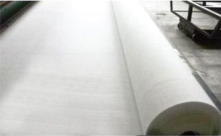
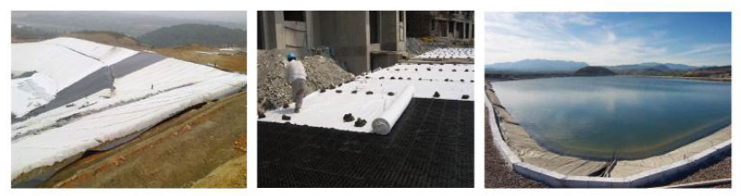

服务热线：0510-87597688

咨询热线
0510-87597688土工布，又称土工织物，它是由合成纤维通过针刺或编织而成的透水性土工合成材料。土工布具有优良的过滤、排水、隔离、加筋、防渗、防护作用，具有重量轻、抗拉强度高、渗透性好、耐高温、抗冷冻、耐老化、耐腐蚀。广泛应用于水利、水电、公路、铁路、港口、机场等领域。
产品特点：
1、强力高，由于使用塑料纤维，在干湿状态下都能保持充分的强力和伸长。
2、耐腐蚀，在不同的酸碱度的泥土及水中能长久耐腐蚀。
3、透水性好，在纤维间有空隙，固有良好的渗水性能。
4、抗微生物性好，对微生物、虫蛀均不受损害。
5、施工方便，由于材质轻、柔，故运送、铺设、施工方便。
产品用途：广泛用于水利、电力、矿井、公路和铁路等土工工程。

1、涂层分离的过滤材料；
2、水库、矿山选矿的排水材料，高层建筑地基的排水材料；
3、江河堤坝、护坡的防冲刷材料；
4、铁路、公路、机场跑道路基的补强材料，沼泽地带修路的加固材料；
5、防霜、防冻的保温材料；
6、沥青路面的防裂材料。
聚酯长丝针刺土工布： GB/T17639-2008
| 项目 | 指标 | |||||||||
| 标称断裂强力（KN/m ） | 4.5 | 7.5 | 10.0 | 15.0 | 20.0 | 25.0 | 30.0 | 40.0 | 50.0 | |
| 1 | 纵横向断裂强力（KN/m ）≥ | 4.5 | 7.5 | 10.0 | 15.0 | 20.0 | 25.0 | 30.0 | 40.0 | 50.0 |
| 2 | 纵横向标准强度对应拉伸率% | 40～80 | ||||||||
| 3 | CBR顶破强力/KN≥ | 0.8 | 1.6 | 1.9 | 2.9 | 3.9 | 5.3 | 6.4 | 7.9 | 8.5 |
| 4 | 纵横向撕破强力 | 0.14 | 0.21 | 0.28 | 0.42 | 0.56 | 0.70 | 0.82 | 1.10 | 1.25 |
| 5 | 等效孔径O (O )/mm | 0.05～0.20 | ||||||||
| 6 | 垂直渗透系数/（cm/s） | Kx(10 -1 ～10 -3 )， K=1.0 ～9.9 | ||||||||
| 7 | 厚度/mm ≥ | 0.8 | 1.2 | 1.6 | 2.2 | 2.8 | 3.4 | 4.2 | 5.5 | 6.8 |
| 8 | 幅宽偏差/% | -0.5 | ||||||||
| 9 | 单位面积质量偏差/% | -5 | ||||||||
聚酯短丝针刺土工布：GB/T17638-1998
| 序号 | 项目\指标\规格 | 150 | 200 | 100 | 250 | 300 | 350 | 400 | 450 | 500 | 600 | 800 | 备注 |
| 1 | 单位面积质量 偏差，% | -8 | -8 | -8 | -8 | -7 | -7 | -7 | -7 | -6 | -6 | -6 | |
| 2 | 厚度，mm ≥ | 0.9 | 1.3 | 1.7 | 2.1 | 2.4 | 2.7 | 3.0 | 3.3 | 3.6 | 4.1 | 5.0 | |
| 3 | 幅度，偏差，% | -0.5 | |||||||||||
| 4 | 断裂强力，（KN/m ） ≥ | 2.5 | 4.5 | 6.5 | 8.0 | 9.5 | 11.0 | 12.5 | 14.0 | 16.0 | 19.0 | 25.0 | 纵横向 |
| 5 | 断裂伸长率，% | 25～100 | |||||||||||
| 6 | CBR顶破强力，KN ≥ | 0.3 | 0.6 | 0.9 | 1.2 | 1.5 | 1.8 | 2.1 | 2.4 | 2.7 | 3.2 | 4.0 | |
| 7 | 等效孔径0 (0 ),mm | 0.07～0.2 | |||||||||||
| 8 | 垂直渗透系数,cm/s | Kx(10 -1 ～10 -3 )， K=1.0 ～9.9 | |||||||||||
| 9 | 撕破强力，KN≥ | 0.08 | 0.12 | 0.16 | 0.20 | 0.24 | 0.28 | 0.33 | 0.38 | 0.42 | 0.46 | 0.60 | 纵横向 |